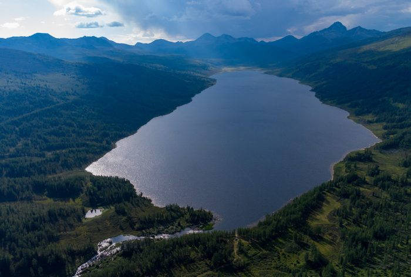

Самый большой национальный парк Казахстана лежит на самом востоке страны — в верховьях Бухтармы, у подножия Белухи. 643 тысячи гектаров кедровой тайги, горных озёр и альпийских лугов, по которым когда-то ходили караваны и австрийские военнопленные, а сегодня — экспедиции вроде нашей. Ниже — что внутри парка, как туда добраться, когда ехать и что важно знать перед поездкой.
Что такое Катон-Карагайский нацпарк
Катон-Карагайский государственный национальный природный парк создан 17 июля 2001 года. Площадь — 643 477 гектаров. Это крупнейшая особо охраняемая природная территория Казахстана: для сравнения, она примерно в полтора раза больше всего Люксембурга.
Парк лежит в Восточно-Казахстанской области, в верховьях рек Бухтарма, Белая и Чёрная Берель, и захватывает южные склоны Катунского хребта с восточной вершиной Белухи (4506 м) — высшей точкой Алтая. Кроме Катунского сюда входят хребты Листвяга, Сарымсакты, Тарбагатай и Южный Алтай.
В 2014 году парк вошёл во Всемирную сеть биосферных резерватов ЮНЕСКО. В 2017-м получил статус трансграничного резервата «Большой Алтай» — совместно с Катунским заповедником на российской стороне. Это редкая для Центральной Азии форма охраны, когда две страны управляют единой экосистемой.
Цифры по природе: больше 1000 видов высших растений, 363 вида позвоночных. В Красной книге Казахстана — таймень, снежный барс, чёрный аист, скопа, сапсан, балобан и ещё около двух десятков видов. Около 34% площади занимают леса, в основном хвойные: ель, сибирский кедр, лиственница, пихта.
Коротко о парке
- Год основания17 июля 2001
- Площадь643 477 га
- Статус ЮНЕСКОс 2014 года
- Часть «Большого Алтая»с 2017 года
- РасположениеКатон-Карагайский район ВКО
- Центрсело Катон-Карагай
Где находится и как добраться
Главные ворота в парк — село Катон-Карагай. От Усть-Каменогорска до него 360 километров, примерно семь часов хорошим ходом. Маршрут стандартный: УКК — Алтай (бывший Зыряновск) — Большенарым — Катон-Карагай. До Катон-Карагая трасса асфальтированная, дальше внутри парка начинаются грунтовки, броды и серпантины — на легковой машине дальше села делать почти нечего.
Из Алматы и Астаны добираются через Усть-Каменогорск: рейсы из обеих столиц есть, дальше — машиной. Из Астаны самостоятельно ехать долго (около 1400 км до УКК), удобнее долететь и стартовать уже отсюда.
Учтите два момента: парк — пограничная зона. Гражданам Казахстана пропуск не нужен, иностранцам — нужен, оформляется заранее в Департаменте полиции ВКО. И посещение парка платное: оплата за пользование ООПТ берётся со всех, лучше внести её заранее. Если едете с организованным туром — этот вопрос за вас закрывают.
Главные локации внутри парка
Парк большой, и за неделю объехать всё невозможно — слишком разная плотность дорог. Ниже — места, ради которых сюда едут чаще всего и которые входят в наш собственный маршрут.
Язевое озеро
Высокогорное озеро в долине Белой Берели — одна из визитных карточек парка. Альпийские луга вокруг, тихая вода, виды на снежные хребты. Сюда ведёт грунтовая дорога; летом проезжается на подготовленном внедорожнике. Хорошее место под днёвку перед обратной дорогой: тут реально провести спокойный день без переездов — рыбалка, пешие прогулки, ночь у воды.

Берель и царские курганы
Село Берель — одна из исторических точек парка. Рядом с ним в 1998 году совместная франко-итальяно-казахстанская археологическая экспедиция нашла на высоте 1200 метров курганы с захоронениями сакских вождей IV века до нашей эры. Берельские курганы — около 30 насыпей, аналогов которым в Казахстане нет. В кургане сохранилась мёрзлая линза, и благодаря ей дошли предметы из дерева, кожи, ткани и даже останки жертвенных лошадей с золотыми украшениями.
Сам Берель в маршруте обычно используется как пункт ночёвки в гостевом доме перед переходом к диким локациям: после палаточных ночей баня и нормальная кровать ощущаются иначе.
Чиндагатуй
Малопосещаемое ущелье в верховьях парка, до которого добраться можно только бездорожьем. Узкий каньон, дикая природа, других туристов вы тут не встретите. Это одна из тех точек, ради которых имеет смысл ехать на подготовленных машинах — обычный маршрутный туризм сюда не заходит.

Моральное озеро
Ещё одна бездорожная локация. Идёт у любителей рыбалки и тех, кто хочет провести вечер у воды без чужой компании. Подъезд требует подготовленной машины и знания дороги — навигатор сюда не доведёт.
Маркаколь и Австрийская дорога
Здесь важное уточнение, потому что в интернете часто путают: само озеро Маркаколь — это не Катон-Карагайский нацпарк, а отдельный Маркакольский государственный природный заповедник. Он находится в Курчумском районе, имеет свою площадь (около 103 000 га) и свой режим охраны. Маркаколь — высокогорное (1447 м), второе по площади озеро Казахстана, около 38 км в длину. В нём водится эндемичный ускуч — рыба из семейства лососевых, которая больше нигде в мире не встречается.
Но Маркаколь часто включают в маршруты по Катон-Карагаю не случайно. Их связывает Австрийская дорога — историческая трасса через горные перевалы, которую в Первую мировую строили австро-венгерские военнопленные. Сегодня это один из самых живописных и технически интересных участков на всём востоке Казахстана: серпантины, перевалы, виды.

Другие точки притяжения
За пределами того, что мы посещаем регулярно в рамках нашей экспедиции, в парке стоит знать ещё про несколько мест — даже если они не войдут в ваш конкретный заезд:
- Гора Белуха (4506 м) — высшая точка Сибири и Алтая. Полноценное восхождение на Белуху — отдельная история на 8–10 дней с альпинистской подготовкой, но виды на неё открываются с многих точек парка.
- Рахмановские источники — горячий курорт с радоновыми водами, известный с XVIII века. Сегодня там работает санаторий.
- Водопад Кокколь — 60–80 метров высотой, на реке Большой Кокколь. Добираются пешком или на лошадях.
- Рудник Кокколь — заброшенный вольфрамовый рудник, к которому ведёт тропа от водопада.
Когда лучше ехать
Окно сезона короткое: середина июня — середина сентября. Раньше — дороги ещё могут быть размытыми после таяния снега, позже — ночные температуры уходят в минус, а в начале октября в горах уже выпадает снег.
Июнь. Реки полные, всё в зелени, луга начинают цвести. Минус — часть дорог может быть в плохом состоянии, особенно после дождей.
Июль. Пиковый сезон. Доступны все локации, тёплые ночи, цветение в самом разгаре. Это месяц, на который мы и ставим нашу экспедицию.
Август. Тёплый и сухой. Появляются ягоды и грибы. Хорошее время для тех, кто хочет совместить маршрут с тихой рыбалкой.
Сентябрь. Золотая осень и почти нет туристов. Ночи уже холодные, нужен тёплый комплект одежды. Световой день короче — насыщенность маршрута падает.
Что важно знать перед поездкой
- Пропуск в погранзону. Для граждан РК не нужен, для иностранцев — обязателен, оформляется в Департаменте полиции ВКО заранее. Без него на территорию парка не пропустят.
- Оплата ООПТ. Билет за посещение парка — обязательное условие. На организованных турах это закрывает оператор.
- Связь. Мобильная сеть работает в сёлах — Катон-Карагай, Берель, Урыль. В горах и на бездорожных участках связи нет. На многодневных маршрутах гиды берут спутниковую связь.
- Заправки. Последняя нормальная заправка — Катон-Карагай. Дальше топлива не найти, поэтому машины уходят на маршрут с полным запасом.
- Погода. Климат резко континентальный. Даже в июле ночные температуры могут опуститься до +3…+5, в высокогорье — до нуля. Тёплая одежда послойно — обязательна.
- Аптечка. Берите свои препараты — в горах их купить негде. У организованных туров есть базовая аптечка, но личные лекарства каждый везёт сам.
Как мы возим в Катон-Карагай
Asferia Adventure делает авторскую экспедицию по Катон-Карагайскому парку 21–27 июля 2026 года. Семь дней, шесть ночей, три экипажа на 12 человек. Маршрут охватывает все ключевые точки, о которых написано выше: Катон-Карагай, Берель, Язевое, Чиндагатуй, Моральное. По желанию группы — Маркаколь по Австрийской дороге.
Две ночи в гостевых домах в сёлах, четыре — в палатках у воды в нацпарке. Машины — подготовленные Toyota Land Cruiser и Nissan Patrol. Питание — полевая кухня плюс кафе в сёлах. Лагерное снаряжение, посуда, горелка, аптечка, координация маршрута — наше. С собой брать только одежду и личные мелочи.
Катон-Карагай
21–27 июля 2026
7 дней / 6 ночей · 12 человек · 3 экипажа · всё включено. 250 000 ₸ с человека.
Группа собирается заранее — у нас фиксированные даты и ограниченное число мест. Если интересно — пишите в директ Instagram или WhatsApp, расскажем подробнее и забронируем место по предоплате.